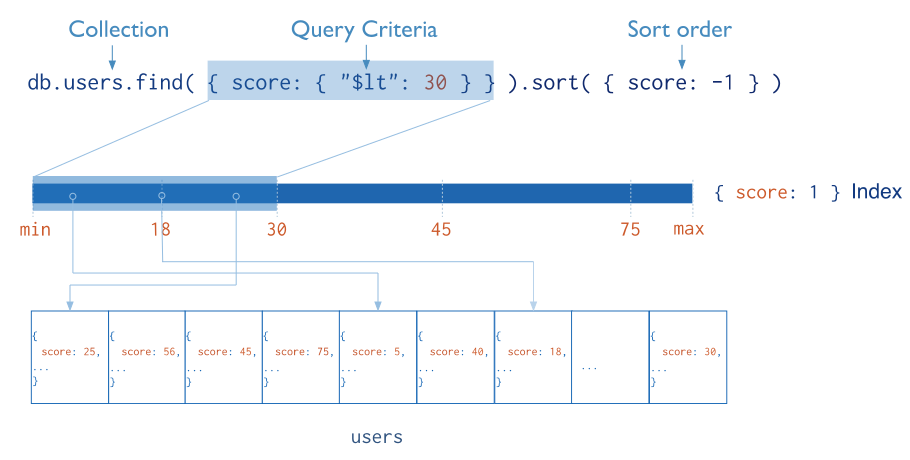
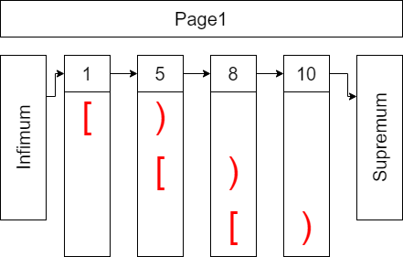

前言
本篇内容是我阅读完MongoDB 4.2官方文档后的梳理总结，并且只是梳理。梳理的内容并不包含MongoDB官方文档的方方面面，更多的是与我们项目相关联的部分。本篇博客不是简单对官方文档的整理，其中包含了很多官方文档之外的资料，文章的脉络和结构，也是根据本人的理解进行组织。本文并不打算阐述太多MongoDB操作和部署相关的内容，更多的是梳理其内部的一些运作机制，如果想了解如何部署和使用MongoDB API，请查阅官网。
最后，由于本人水平有限，如有不当之处欢迎指出，同时也欢迎读者加入QQ:185017593群聊。
MongoDB简介
MongoDB是一种文档型数据库，同时它也是NoSQL（Not only SQL）型数据库的一种[1]。NoSQL型数据库，出现于21世纪第一个十年末期，随着存储设备价格的持续走低（如图1所示），人们不用再为了节约存储空间，而设计复杂的数据模型而奔波，NoSQL数据库是在这种背景下产生的。文档型数据库只是NoSQL数据库的一种，MongoDB就是属于这种类别。
图1
NoSQL是与RDBMS（ relational database management systems）相对的概念。相比于RDBMS，NoSQL类型的数据库，不需要指定Schema，表设计上更为灵活，非常适合游戏这种业务多变的应用场景。
mongod进程、DB、Collection和Document的关系
在Linux系统上，我们可以通过输入mongod –config config_name命令，启动mongod进程，该进程是负责管理我们的请求和存储的后台进程。在完成MongoDB的安装之后，其默认配置的路径位于/etc/mongod.conf，默认内容如下所示：
# mongod.conf
# for documentation of all options, see:
# http://docs.mongodb.org/manual/reference/configuration-options/
# where to write logging data.
systemLog:
destination: file
logAppend: true
path: /var/log/mongodb/mongod.log
# Where and how to store data.
storage:
dbPath: /var/lib/mongo
journal:
enabled: true
# engine:
# wiredTiger:
# how the process runs
processManagement:
fork: true # fork and run in background
pidFilePath: /var/run/mongodb/mongod.pid # location of pidfile
timeZoneInfo: /usr/share/zoneinfo
# network interfaces
net:
port: 27017
bindIp: 0.0.0.0
#security:
#operationProfiling:
#replication:
#sharding:
## Enterprise-Only Options
#auditLog:
#snmp:默认配置包含了一些关键信息，这里对其做一下简要的介绍：
- systemLog：系统日志配置
- destination：日志最终的目标，在默认配置中，日志是输出到文件中的。
- logAppend：是否在文件末尾追加日志。
- path：默认的系统日志文件路径。
- storage：存储日志相关
- dbPath：存储日志路径。
- journal：是否开启日记功能，如果是，那么每次写请求都会被记录在write ahead log中，该机制用于最大限度避免数据丢失。后续的【MongoDB备份与容灾-WAL机制】部分会提到。
- engine：选择使用的引擎，4.2版本的MongoDB默认使用wiretiger引擎。
- processManagement：进程管理相关
- fork：是否fork一个后台进程跑mongod进程？
- pidFilePath：pid文件位置。
- timeZoneInfo：时区相关。
- net：网络相关
- port：监听的端口。
- bingIp：绑定的ip地址，如果既想绑定localhost，又想绑定本机的对外ip地址，那么填0.0.0.0。
- security：安全相关，本文不讨论，详情请查阅相关文档。
- operationProfiling：profile相关，本文不讨论，详情请查阅相关文档。
- replication：复制集相关，未使用复制集的不用填。
- replSetName：复制集名称。
- sharding：分片集群相关，未使用分片集群机制的不用填。
- clusterRole：分片集群包含三个重要组成部分，分别是config server、shard server和mongos，至于他们的定义和作用，后文会提到。这里一般填shardsvr或者configsvr。
mongod进程启动之后，我们可以通过输入mongo –host 127.0.0.1:27017来登录MongoDB控制台，如果输入show databases;指令，可以查看到数据库信息，如：
manistein_1001_regiondb 0.000GB
manistein_global 0.000GB
manistein_rolecluster 0.000GB显示内容左侧的是数据库的库名，右侧则显示数据库的大小。这里可以得出一个结论，一个mongod进程可以管理多个数据库。接下来，输入use manistein_1001_regiondb;命令，然后输入show tables;命令，在我的项目中，可以得到如下结果：
HotfixVersion
Mail
Map
RoleCity显示出来的信息就是表，MongoDB中的表就是Collection。在我的系统中，输入db.RoleCity.find().pretty();可以得到如下的结果：
{
"_id" : 107283433,
"data" : {
...
}
}
# other documents
...这是类json类型的数据结构，被称之为文档，MongoDB将每一行记录（也就是文档）以BSON文档的方式存储。BSON是JSON的二进制表示，并且它有更多的数据类型[2]。每个文档都有一个名为_id的字段作为文档最开始的字段。这个_id字段就是每个文档的主键(primary key)，每个文档必须有一个唯一的_id值作为其主键的值，用户可以在插入文档时，指定这个值（可以是数值、唯一标识符等）。如果用户在插入新增的文档时，没有指定_id字段的值，那么MongoDB会自动为其生成一个ObjectId，这个ObjectId的组织形式如下所示：
+----------------+------------+--------+------------+
| timestamp |hash of host| PID | counter |
+----------------+------------+--------+------------+
| 4 bytes | 3 bytes | 2 bytes| 3 bytes |
+----------------+------------+--------+------------+ObjectId一共12字节，其中最高的4个字节是时间戳，中间5个字节用于标识全局唯一id用的，因为MongoDB是为分布式应用场景设计的，因此作为唯一id的值，必须全局唯一。5个字节中，头3个是主机名的hash值，而后面2个字节则是进程id，最后3个字节用于处理每秒并发的情况，MongoDB允许每台机，每个进程，每秒最多生成2^24（16777216）个唯一id。现在来看一下，向表插入文档不指定主键值时的情况，在我的机器上，我输入了db.RoleCity.insert({ xxx:1 })命令，然后按下回车执行。再用db.RoleCity.find({ xxx:1 }).pretty()查找，得到如下结果：
{ "_id" : ObjectId("63d500a52bd1a8992a23c1a4"), "xxx" : 1 }_id值由ObjectId函数指定，参数是一串16进制组成的字符串，这个字符串就是ObjectId值的哈希值。如果调用ObjectId()函数时，不传入这串哈希值，那么将返回一个新的ObjectId值。_id的值不必保证全局唯一，但是要保证每个Collection里是唯一的。
本节最后一部分，将花费一点篇幅来讨论索引。索引是用来提升查找效率的机制，尤其是范围查找[3]，这里引用一处官方的例子，如图2所示：
图2
users是表名，这里为score字段创建了索引，索引按照score的值，从小到大排序，对应的索引值与文档的存储地址相关联。一张表被创建时，其默认以_id字段为索引键。
基于B+树的索引探讨
本节稍稍探索一些索引的一些内容，正如MongoDB官方文档说的那样，其索引机制和其他数据库系统类似，现阶段深入MongoDB的存储引擎wiredtiger的源码，既不经济也不实惠，所以我就拿自己比较熟悉的InnoDB来进行简要的概述，权当抛砖引玉。目的也很简单，就是让读者能够树立对索引的直观理解。实际上B树才是MongoDB可选的数据结构之一，整体上和B+树有差别但大体类似，另一种则是LSM树，将在下一节进行介绍[6]。
1) 什么是记录
在MySQL中，记录就是数据表里的一行，在MongoDB中，就是Collection中的一个document。它们最终会被编码成二进制数据，最后写入磁盘中。InnoDB作为MySQL的存储引擎之一，它可以使用COMPACT的编码方式，去对记录进行编码。在MongoDB中，则是对记录编码成bson格式，最后将记录写入磁盘中。
2) 页的概念
在很多数据库中，页是其存储的最小单位，在InnoDB中页的大小是16KB。页的功能是用来存储记录和索引数据的，数据库存取的最小单位就是页，也就是说要么一次从磁盘中读取一页的数据到内存，要么一次将一页的数据从内存写入到磁盘，以InnoDB为例，页的结构大致如图3所示：
图3
图3并未显示页结构所有的细节，但是主要部分已经展示，通过这些部分，已经足够让读者形成对页的具体认知了，现在分别来看看这些部分具体是做什么的：
- File Header：文件头，内容包括但不限于：
- 链表地址：页在存储空间中，也是一个双向链表，既然是链表就需要有地方存储其上一个页的地址和下一个页的地址，这些信息都是存放在File Header内的，只是图3没有展示出来。
- 校验和：每个页在被修改之后，都会计算一次校验和并存储在File Header中，因为数据库一次写入的最小单位是一页，一页又是挺大的空间，因此可能存在写一半就断电的情况。File Tailer也存着一样的校验和，如果存在写一半就断电的情况，那么一定存在File Header的校验和与File Tailer不一致，从而需要进行回滚操作。
- 页号：每个页都有一个唯一的ID，这个ID就是页号，在索引查找中，它的作用非常关键，后面提到。
- 页类型：许多数据库页用来存储的信息很多，包括数据库表中的记录、检索到这些记录的索引信息、日志信息（如InnoDB的redo日志和undo日志）等，这些数据会分门别类放入不同的页中，这些数据不能混合存储，因此需要给页标记类型，来进行分类。
- Page Header：InnoDB也头部的信息很多，但是这里也只是为了借鉴其中的一些重要概念，许多存储引擎有类似的设计，本文关注的部分如下：
- 记录数：页中一共有多少条有效记录。
- 垃圾链表首个元素的地址，页中的记录被删除时，空间并不会被立即回收，而是标记为delete状态，这些被标记为delete状态的记录会被放入该页的垃圾链表中，其中垃圾链表的首个元素的地址就是存放在Page Header中。
- 下一条用户记录可以写入的位置，其实就是图3中Page Free的起始位置。
- Infimum：本页记录中，索引值最小的记录的前一个记录，它可以方便地找到本页记录中，索引值最小的记录。
- Supremum：本页记录中，索引值最大的记录的后一个记录。
- Records：用户存储的记录，每一条记录都是紧挨在存储空间中的。
- Page Free：本页中未被使用的空间，后续记录可以往这里写。
- Page Directory：页目录，为了加快查找的效率，页中的记录会以每4-8条为一组，每组最后一条记录会放到页目录中，这样可以通过二分法快速查找想要查找的记录。
- File Tailer：文件尾部，一般只记录校验和，页被修改之后，会计算出新的File Header和File Tailer校验和，启动时，如果校验和相等则认为数据被完整写入存储空间，否则就是写入不完整，需要回滚。
现在读者对页的概念，应该有个大致的认识了。如果说磁盘在逻辑上是一个连续的卡带，那么这些页就是以一定连续的字节数（InnoDB中是16KB）为一组单位的存储空间。页是存放记录的，那么一条记录在逻辑上需要具备哪些最基础的元素呢？图4展现了一些基本的信息，这里需要注意的是，不论是Wiredtiger引擎还是InnoDB，它们记录的编码格式都不是图中展现的方式，这里为了方便说明和理解。
图4
图4的记录，会存储在图3标记为Records的蓝色区域中，并且记录在存储空间中是紧凑存储的。Primary Key是主键索引，在MongoDB中就是文档的_id字段的值，而InnoDB则是被设置为主键索引的值，主键索引一般需要值唯一。Next Record就是指向下一条记录的地址。TRX_ID是事务ID，Roll Pointer则是undo日志的地址，这些是实现MVCC机制的基础，目前暂时不打算讨论MVCC，所以忽略这两个字段。最后存储的则是经过序列化的用户数据。可以想象一下MongoDB的文档，序列化成BSON后的部分就是存储在这样的空间之中。当然，每条记录还应该记录自己占用了多少空间，读者能够理解到这一层就好，图4并未展示。
有时候一条记录很大，可能会超过页的大小，许多存储引擎会将超出的部分放到溢出页中，然后将原来的页留出一部分空间来存储溢出页数据存放的地址。这里还需要强调的一点则是，页中的记录一定是按主键索引的值，从小到达排列。页链表中的下一个页的最小索引值，一定大于本页中的最大索引值，这是构建索引的基础。
3) 构建索引的一个例子
假设现在创建一张名为XXX的表（MongoDB中是Collection，MySQL中是Table），并且塞入主键ID为1、5、8、10、28、33、75、91、102、103、111、122、124、133、165、173的记录，并且假设存储数据的页最多只能放4条记录，记录页索引的页只能放两条记录（从空间上来说，确实不是很合理，因为一页大小是KB级别的，这里为了方便理解就这么阐述），那么生成的B+树则如图5所示：
图5
这里需要注意的是，首先需要有个地方存储表XXX与其B+树根节点的信息，非叶子节点的页，每一行记录对应着一个页号，其记录的主键ID也是对应页中，记录主键ID的最小值。所有的记录均是按照主键ID值，由小到大的顺序排列，查找一条记录就是不断缩小范围的过程，采取的是半开半闭区间的方式，如图6所示：
图6
假设图6的不是叶子节点，那么查找主键ID为4的记录，就要到主键ID为1的记录所对应的页号的页里查找，如果查找主键ID为5的记录，则去主键ID为5的记录所对应的页号的页里查找。
4) 利用索引进行增、删、查、改操作
接下来看一下在前面基础上，存储引擎的增删查改操作，也就是大家常说的CRUD操作。首先要看的是增加一条记录的情景。这种情景也要分多种情况来看。
以图5为例，现在来看一下增加记录的第一种情况，用户创建一条主键ID为11的记录，11这个值在区间[1,102)、[1,26)之间，因此顺着根节点往下查找，找到想要插入的页，得到图7的结果。
图7
标记为粉红色的部分，就是希望插入的页的查找顺序。找B+树的叶子节点后，就需要执行插入操作了，由于主键索引的值11比Page1中值最大的索引10要大，因此需要创建新的页，并将新纪录插入，并且更新页的链表关系，得到图8的结果。如果此时插入的数据主键ID为9的话，那么需要将主键ID值为10的记录移动到新创建的页中，并将主键ID为9的记录塞入原来10的位置，得到图9的结果。数据超出页限制大小，则需要将超出的部分塞入溢出页中，当然原来的记录需要预留存放溢出页地址的空间。此外，如果插入的页空间不足，也是需要申请新的页，将新的记录塞入新页，最后再改变页的链接关系。
 图8
图8
 图9
图9
接下来要看的是删除的情况，许多存储引擎的记录头部会有一个标记，这个标记表示该记录是否被删除，当要删除一条记录时，将该标记设置成1，否则就是0。被标记为删除的记录会放入由Page Header管理的垃圾链表中。以后插入新的记录时还可以复用，图10展示了主键ID为9的记录被删除的情况。
 图10
图10
关于查的情况，其实已经包含在增加记录的流程里了，只是增加记录是要找到目标页，然后再执行插入逻辑，查找的话是需要在目标页里找与之匹配的记录。相信读者通过前面的图文能够很轻松推测出其逻辑，这里不再赘述。
修改一条记录，首先也是要先查找，找到对应的记录之后需要做一个判断，即是修改后记录的大小是否与修改前一致。如果一致则在原来记录的存储空间上原地覆盖，如果不一致则需要先将旧记录设置为删除状态，再插入更新值后的记录。
5) 二级索引和回表操作
本节要讨论的是二级索引，所谓的二级索引则是主键索引之外，将指定字段设置为索引的情况。现在修改一下前面的情况，将data部分改成如图11的样子。
图11
现在以v为key，创建一个索引，这个索引就是二级索引，得到图12的结果。二级索引的key是可以重复的，所以需要加上主键ID来进行排序。叶子节点中，存储的是主键ID的值，而非实际的数据。查找到对应的主键ID之后，还需要回原来的主键索引表里查找一次，这个操作就叫做回表。查找v=‘a’的记录，会返回第一个匹配到的记录。到这里就完成了索引部分的论述了。
图12
LSM树探索
LSM树是在存储引擎中，被广泛使用的数据结构，它适合写入操作多于读取操作的应用场景。知名的数据库包括BigTable、HBase、LevelDB等均使用这种数据结构。LSM树直接将写入操作作用于内存中，尔后会在合适的时机，将内存中的数据写入文件中。本文将对LSM树的读写机制进行介绍。LSM树也是MongoDB默认的存储引擎WiredTiger可选的模式之一。现在将通过一些实例，对其进行介绍。LSM树将数据分为两个部分，一个部分在内存，一个部分在磁盘。在内存的部分一般是自平衡二叉树，在磁盘的部分被称为SSTable（sorted string table），在SSTable中，一般而言存入它的键值对均是字符串类型，本文为了论述方便，采用的例子中，key将是int类型，而value则是string类型。
1) 写入流程
目前将通过一个实例，来阐述整个写入过程。假设当前数据库将存入一系列的键值对，键的类型为整型类型，值的类型为字符串。那么现在先后往使用LSM树模式的数据库写入(2,“H”)、(1,“E”)、(4,“L”)、(3,“L”)，那么这些键值对将先后往一个自平衡二叉树（红黑树或者AVL树，这里采用红黑树）写入数据。本文不打算深入探讨红黑树，读者可以通过《红黑树探索》一文进行深入了解。这颗红黑树在内存中，被称为in memory tree。现在根据本例，通过图13来展示这一点：
图13
图只展示了键的信息，所有的键值对写入，都会先到in memory tree中查找是否已有节点存在，如果存在则更新它的值，如果不存在则插入新的节点。当in memory tree的节点数超过一定数量时，会触发将红黑树信息写入文件的操作。这里假设阈值是5个节点，那么现在写入(6, “O”)，则触发了这个流程。in memory tree并不会立即写入到文件中，而是将这整个树设置为写入树，将其称为tree in flush。于是得到图14的结果：
图14
如果此时，有新的键值对写入，那么这些键值对将插入到in memory tree中。并不会影响到写入树的文件写入流程，比如现在写入(2,“W”)、(1,“O”)、(4,“R”)、(8,“L”)，得到图15的结果：
图15
Tree In Flush完成写入之后，就会被清空，如果此时继续向in memory tree写入一个键值对(9, “D”)，那么新的in memory tree将变为tree in flush，并且执行写入操作，得到图16的结果：
图16
可以看到，红黑树写入文件的过程，是将键值对按键从小到大的顺序写入的，换句话说就是按中序遍历的方式遍历红黑树，这样就能根据键值按从小到大的顺序写入文件。观察图16，可以看到存储引擎在完成落地操作后，会出现多个文件，这些文件又有可能包含相同的键，并且文件越新，内容越新。随着写入的增加，文件会越来越多，在此就需要一个后台进程，对历史文件进行压缩实现重写，完成重写后，将旧的文件删除，如图17所示：
图17
花括号内的Segment File会在合并后删除。到目前为止，对LSM树的写入流程进行了比较简单的概述。实际上，针对文件还需要构建稀疏索引，用以提升查找效率。什么是稀疏索引呢？就是每隔一段距离，取一个元素，将这些元素按照键从小到大的顺序排列，如图18所示。实际上相隔的距离不应该这么小，这里仅仅只是做个示例。
图18
一般来说，每个Segment File都有一个Sparse Index，查找键值对也是通过二分法先查询Sparse Index，找到之后再遍历其中的一段（本索引值和下一个索引值之间的部分），比如查找(4, “R”)，先找到索引(3,“L”)，然后开始遍历直至找到为止。如果没找到目标键值对，则去相对旧的文Segment File里查找，直至找到最后一个文件。
2) 查找流程
在完成了写入流程的描述之后，查找流程则简单得多，实际上通过阅读前一小节，读者应该已经对查找有了大概的认知，现在简要描述一下其流程：
- 先从in memory tree中查找，找到则返回键值对，找不到则进入下一步。
- 在tree in flush中查找，找到则返回键值对，找不到则进入下一步。
- 从最新的Segment File的Sparse Index开始，查找，找不到去旧的文件里找，直至找到或者查找完最旧的那个Segment File为止。
到这里，有些读者可能会问，如果键值对不存在，这个查找过程岂不是会很耗，答案是确实如此，因此需要引入布隆过滤器，本文不打算介绍布隆过滤器，读者可以通过Bloom Filters-Introduction and Implementation这篇文章进行阅读。
3) 与B+树的比较
本节简要介绍了LSM树的基本原理，这套机制离实际存储引擎的设计和实现还是显得有点简单。但是对于理解这套机制是足够的了。LSM树会经常被拿来和B+树进行比较，总的来说LSM树更适合写入操作多于读取的情况，而B+树则适合读取操作多于写入操作的情况。实际上LSM树对写入更加友好。对于那些采用定时存盘机制的游戏业务来说，LSM树非常适合这种应用场景。在官方的基准测试中，LSM树的写入性能是B+树的1.5-2倍，而B+树的读取性能是LSM树的1.5-3倍[6]。
MongoDB的CRUD操作
MongoDB的CRUD操作，指的是Create、Read、Update和Delete操作。实质是增、查、改、删操作。本文不打算介绍具体的增删查改接口调用，读者可以通过官网的MongoDB CRUD Operations进行查阅。这里对业务服务器与MongoDB服务器的交互，作一些简要的说明。业务服务器要使用数据库，那么业务服务器将是数据库服务器的客户端，客户端对数据库的操作行为，需要通过某种协议告知数据库服务器，进而让数据库执行对应的操作。
业务服务器进程，要对数据库进程进行CRUD操作，首先需要建立连接（一般是使用TCP连接），连接断开时，业务服务器再次发起请求时，要能够做到重连。建立连接之后，业务服务器就可以向数据库服务器发起请求了，现在以Update命令为例，对这个流程进行说明。
图19
图20举了一个例子，业务服务器调用lmongo.update_doc这个函数，这个函数会按照mongodb客户端的协议规则，将请求打包成stream，然后通过TCP连接传输给DB进程，DB进程接收到完整的数据包之后，则会解析请求，并按数据库服务器的规范调用对应的api，并将最终的结果返回给客户端。其他的情况和图20的例子差不多，读者可以自行推导，这里不再赘述。
图20
MongoDB持久化
本节将来介绍MongoDB的持久化机制，MongoDB从3.2版本开始，就使用WiredTiger作为默认的存储引擎。WiredTiger引擎可以使用B+树或者LSM树模式，不管使用哪种模式，内存中的数据快照也是定时存储到磁盘里的，这个时间间隔是60s。当内存快照存储到磁盘里时，这些数据就变成了checkpoint。与此同时，每个针对具体表的操作，均会写入到磁盘中，这里的每一个操作，都会作为一行记录，存储到预写日志中（write-ahead log，简称WAL）。
1) 存储引擎简介
WiredTiger引擎，支持文档级别的并发，也就是说多个客户端连接，可以同时操作多个文档。文档级别的写入和更新，使用MVCC机制，采取的是乐观锁。操作表和库级别的共享变量，则需要用悲观锁进行保护。
2) snapshot、checkpoint和WAL
前文介绍了B+树和LSM树两种模式，不管是B+树的数据页还是LSM树的in memory tree，它们都有个特点，就是不能够实时存盘。而是要等待一定的时机，将数据页或者in memory tree里的数据，flush到磁盘里。flush到磁盘里的数据，就变成了checkpoint，在内存里它们被称为snapshot。为了能够提供更好的持久化以及容灾能力，WiredTiger引擎使用了WAL机制，来记录用户对数据库的每一条操作记录，当数据库服务器发生宕机时，会先查找最近的checkpoint，然后根据上次checkpoint的时间节点开始，逐条WAL回写，恢复宕机时的现场。由于WAL一般是尾插，有比较少的随机IO，所以写入性能还算好。
MongoDB复制集
本节将介绍复制集。
1) 什么是复制集？
复制集是MongoDB实现高可用的一种保证机制，通过多个冗余的节点，在primary节点挂掉之后，能够快速选举出新的primary节点，并且让客户端快速切换到其他可用的节点中。关于选举机制，读者可以参阅The Raft Consensus Algorithm。复制集中有一个primary节点，以及若干个secondary节点，和/或arbiter节点。primary节点通过选举选出，参与选举的节点，必须是奇数位，最多可以有7个投票节点。primary和secondary的节点总数一般不能超过50个[7]。如果启用复制集，MongoDB的投票节点数不能少于3个。
 图21
图21
2) 复制集的节点结构
复制集中，最小的单位要么是PSS模式（Primary-Secondary-Secondary），要么是PSA模式（Primary-Secondary-Arbiter）。PSS模式比较容易理解，就是一个Primary节点，两个Secondary节点。而PSA模式则是，一个Primary节点，一个Secondary节点和一个Arbiter节点，其中Arbiter节点不负责存储数据，不负责处理读写请求，它仅仅只是一个投票节点。
3) 复制集同步机制
默认情况下，所有的读写请求都是发往Primary节点的，而所有的写入操作，则会先写入WAL，然后再写入oplog中。Secondary会定时从Primary节点中拉取oplog的信息，并在自己的快照中进行回写，以做到和Primary保持一致。WAL和oplog的关系是，每个写入WAL的操作，均会产生一个事务，事务的写入内容如下所示：
beginTransaction();
writeDataToColleciton();
writeCollectionIndex();
writeOplog();
commitTransaction();可以看到，每个写操作最终可能作用于自己的操作目标（Collection）、索引表和将oplog写入，也就是说如果操作写入到了WAL，oplog也一定会产生。所以Secondary可以放心地拉取oplog并且执行重写操作，因为这些操作已经被记录在了Primary中，并且持久化了[9]。读者可以通过图22来感受一下这个机制。
图22
4) 读关注和写关注
业务服务器在创建于数据库服务器交互的连接时，可以指定写关注和读关注，所谓的写关注主要有几种：
- 写入主节点的WAL后，返回结果给业务服务器（设置参数{w:1}）。
- 写入大多数节点（一般超过半数）的WAL后，返回结果给业务服务器（设置参数{w:“majority”}）。
- 写入指定数量的节点写入WAL后，返回结果给业务服务器（设置参数{w:n}）。
读关注则和写关注有关，比如读取某条数据，如果该数据是写入Primary的WAL就返回，还是大多数，还是指定节点才返回，具体可以查阅Read Concern这篇。
结束语
此系列并不深入MongoDB的源码，而是从有利于使用者的视角，从上层对MongoDB进行了初步的探索。我在此期间查阅了大量的博客、书籍等资料，逐步梳理了一套知识体系，权当抛砖引玉，希望对读者有所帮助，如果读者在阅读过程中发现任何错漏，欢迎告知我，读者可以通过这个QQ:185017593群找到我。
Reference
[1] What is NoSQL
[2] Documents
[3] Indexes
[4] Interface to LSM trees
[5] 《MySQL是怎样运行的：从根上理解MySQL》
[6] Btree vs LSM
[7] Replica Set Members
[8] The Raft Consensus Algorithm
[9] Performing Data Write Operations with MongoDB